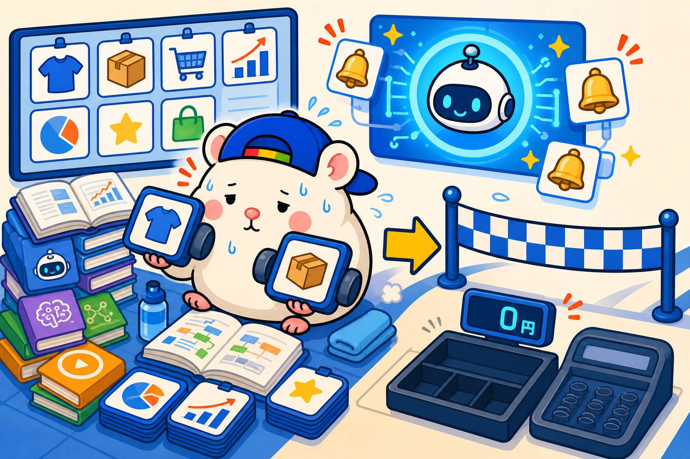
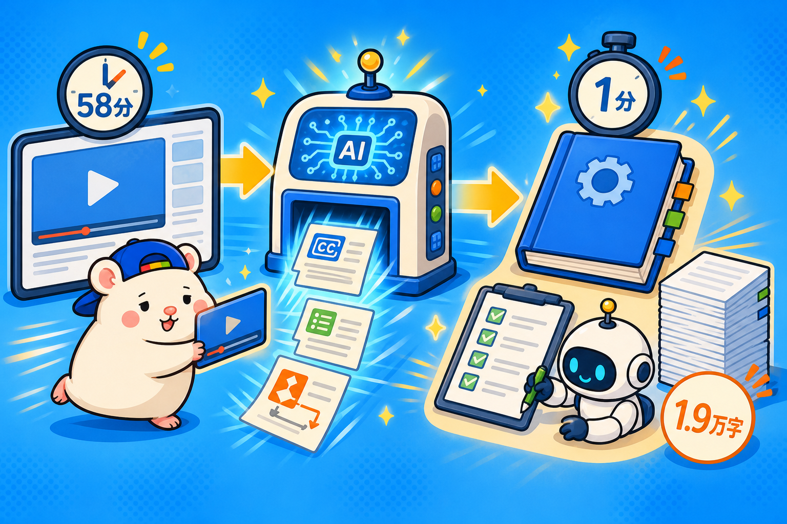

あなたは、AIに毎月いくら課金していますか。
3,000円の人もいれば、1万円を超えている人もいると思います。
ぼくの店の場合は、月110ドル。約1.6万円です。
では、もうひとつ質問です。
そのAIで、いくら稼ぎましたか。
ここで数字が出てくる人、ほとんどいないと思います。
課金分より稼げていれば、AIは「経費」です。
稼げていなければ、それは月額の「習いごと」です。
今日は、この差がどこで生まれるかの話をします。
やり方ばかり、覚えていませんか

AIで稼げていない理由は、ハッキリしています。
やり方ばかり覚えているからです。
プロンプト集を保存する。
活用術の記事を読む。
新しいモデルが出たら試す。
要約させて、文章を書かせて、「AIすごい」と言う。
ぜんぶ、素振りです。
素振りは何万回やっても、1円にもなりません。
AIは、それ単体では何も生みません。
稼ぐには、AIを「商売」につなぐ必要があります。
それも、ゼロから発明した商売ではなく、昔から回り続けている副業・ビジネスにつなぐのが近道です。
型が枯れている商売ほど、AIに渡しやすいからです。
ただし、商売にはAIとの「相性」があります
ここが今日いちばん言いたいところです。
どの副業でもAIをつなげば稼げるか、というと、違います。
AIと相性の良い商売と、そうでない商売があります。
AIと相性が良い
AIが「代替」しやすい仕事です。
ライティング、翻訳、単純な動画編集、PC作業。
仕事そのものが悪いのではありません。
AIとの位置関係が悪いんです。
AIが進化するほど、あなたの単価が下がっていく側に立ってしまう。
AIと相性が悪い
物理の労働が主役の仕事です。
体が現場にないと成立しない商売は、AIが手伝える部分が小さい。
店舗、農業、現場作業、など。
ちなみにぼくの相棒の店(レンタルスペース)も、鍵や清掃など現地が絡むぶん、実はこっち寄りです。
それでもやる理由は、前に書きました。
▼AIと相性が良いとはいえないレンタルスペースを、私がやる理由
https://rental-space.net/articles/2026-08-20-why-rental-space-in-ai-era.html
つまり、相性が良い商売の条件は何か。
3つです。
- 作業がデジタルで完結する部分が大きい(AIの土俵)
- 判断が数字でできる(AIに任せられる)
- 繰り返しの量が、そのまま利益になる(AIは疲れない)
eBay輸出は、AIと相性バツグン
なぜか。
eBay輸出の仕事を分解すると、こうなります。
リサーチ。出品。値付け。在庫の監視。英語の顧客対応。経理。
そして、梱包発送。
最後のひとつ以外、ぜんぶデータ作業です。
つまり、ぜんぶAIの得意技。
体が要るのは梱包発送だけで、ここは仕組み化も外注もできます。
条件2の「数字で判断」も満たします。
出すか出さないかは、売値から手数料・送料・関税・仕入値を引いて、利益が残るかどうか。
式に落ちる判断は、AIに委任できます。
条件3の「量」は、いちばん分かりやすい。
eBayは出品数がモノを言う商売です。
人間が1日100品出すのは地獄ですが、AIは平気な顔でやります。
ぼくの店は多い日、400品近く出ています。
おまけに、英語の壁はAIで消えました。
それでいて「英語が怖い」という壁は、他の人の参入をまだ止めてくれています。
壁が消えた側から、壁の内側に入れる。今だけの歪みです。
前は人間の外注さん21名で回していた店を、今はAI社員だけで回して、1ヶ月目の利益は18万6,673円でした。
内訳はぜんぶこの記事に書いています。
▼【eBay無在庫】すべてAIで1ヶ月目から利益18万出た話
https://rental-space.net/articles/2026-08-23-ebay-ai-first-month-profit.html
「ノウハウを知らない」は、もう言い訳になりません

「でも、eBayのやり方を知らないし……」と思った人へ。
YouTubeで「eBay リサーチ」と検索してみてください。
1時間半の完全攻略。30分の画面実演。
懇切丁寧なノウハウが、無料で、いくらでも出てきます。
eBay輸出の全工程がこと細かく実演されています。
ノウハウは、無料でとっくに出切っているんです。
そして今は、そのノウハウすら、AIに食わせる時代です。
この動画のノウハウを、うちの店に取り込みたい: (動画URL)
字幕を取ってテキストにして、手順と判断基準を抽出して。
私の店向けの運用チェックリストに変換して。
Claude Codeにこう頼んでください。
道具の準備から抽出まで、AIが自分で全部やります。
実測では、58分のリサーチ解説動画が、1分ほどで約1.9万字のテキストになりました。
人間が58分かけて観る動画は、AIには一瞬で読める教科書です。
動画を観てメモを取るのが「勉強」だった時代から、
内容をAIに食わせて、AIに動いてもらう時代になったのです。
まとめ: 素振りを終わりにしましょう
AIで稼げないのは、あなたのAIスキルが低いからではありません。
つなぐ先のビジネスが決まっていないだけです。
そのビジネスは稼ぎやすい定番の副業・ビジネスでいいのです。
AIと相性の良い商売を、気楽に決める。
あとはAIに、店を回させる。
ぼくの店がその実例です。
この店の作り方を全部書いた教科書を、本日発売しました🐹
▼AI × eBay輸出の教科書 — 梱包以外、ぜんぶAI
Brain版: https://brmk.io/pqk3UP
note版(内容は同じです): https://note.com/cham_ebay/n/nb6672d9c3e10
▼中の人🏠(レンタルスペース23部屋・売上1.5億)のレンスペ実録
https://note.com/rentalspace_kiku
▼ブログ(eBay×レンスペ、全記事まとめ)
https://rental-space.net
▼この店のやり方は、ぜんぶ1冊にまとめてあります
リサーチ・出品・値付け・顧客対応まで、初月利益18万6,673円を出した実店舗の記録と手順を全部書いた教科書です。
読んだその日から、AI社員の作り方をそのまま真似できます。
『AI × eBay輸出の教科書 — 梱包以外、ぜんぶAI』(9,800円)
https://brmk.io/pqk3UP
※先行5部限定の価格です。以降、2,000円ずつ値上げします。